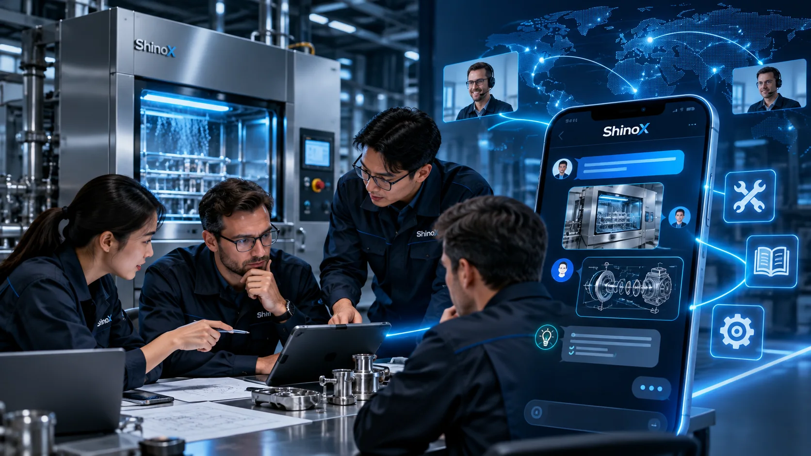
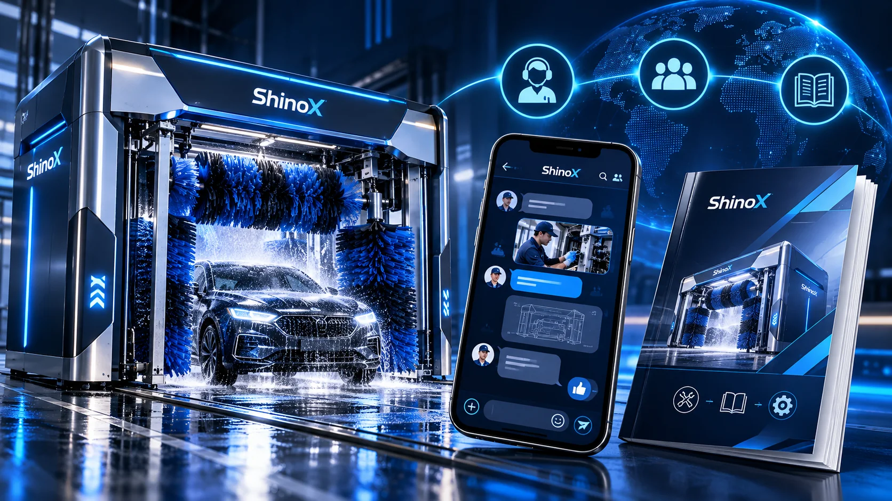
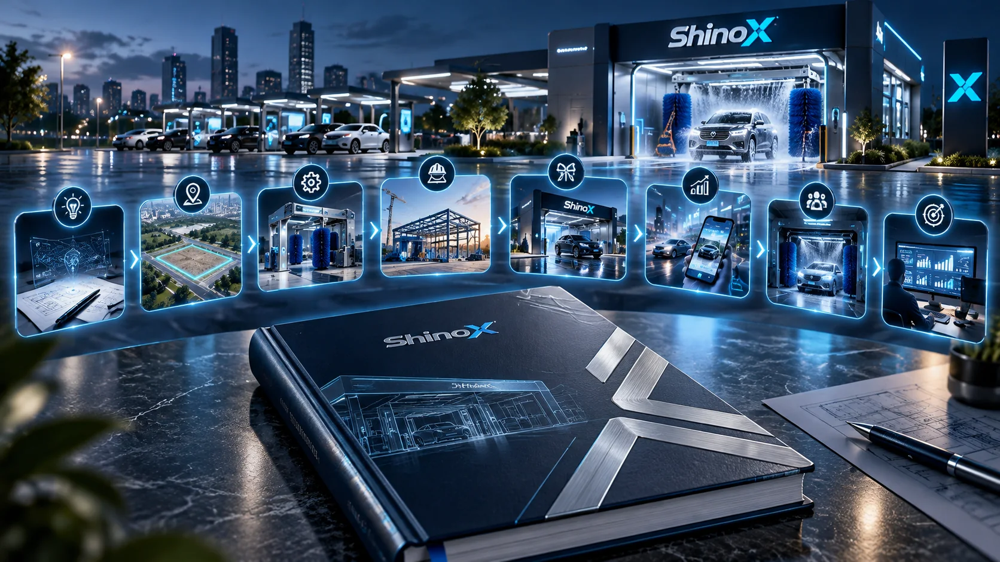

SHINOX | BEYOND THE MACHINE
More Than a Car Wash Machine — ShinoX Technical Support & Business Guidance
A car wash machine is the start of a business. Comprehensive technical and operational support is what helps sustain it over time.
What matters most after purchasing a car wash machine?
Beyond equipment quality, operators need to understand how to maintain their equipment, respond to problems and run a car wash business in practice.
ShinoX aims to offer more than a machine: a support service covering equipment introduction, opening preparations and day-to-day operations.
TECHNICAL SUPPORT COMMUNITY
01 | ShinoX Technical Support Community
Technical exchange continues after your equipment purchase.
Purchasers of ShinoX car wash machines under eligible plans can join the ShinoX technical support community.
Through the community, equipment operators can share their experiences with the ShinoX technical team and learn about equipment operation, routine care and common maintenance issues.
Even after the equipment warranty has expired, members can continue exchanging repair and maintenance knowledge through the group, gradually developing their own maintenance capabilities.
Topics covered include:
- Equipment operation and practical usage tips
- Routine cleaning and maintenance methods
- Common faults and initial troubleshooting
- Component maintenance and replacement knowledge
- Repair and maintenance experience beyond the warranty period
There is no additional group participation fee for technical exchange. Repairs, parts, on-site service and warranty coverage are subject to the purchase agreement and service terms.

CAR WASH BUSINESS GUIDE
02 | A Dedicated Car Wash Business Guide
From planning and opening to daily operations, in one practical guide.
You have purchased the equipment. How do you get your business open?
ShinoX provides a business guide to help entrepreneurs build a comprehensive understanding of car wash operations.
Whether you are entering the car wash industry for the first time or preparing to expand to a second or third location, the guide outlines the work to consider at each stage.
The guide covers eight key topics:
Business planning
Investment budgeting, business models and cost assessment
Site assessment
Location selection, vehicle circulation and space planning
Site construction
Wash-bay planning, utilities, drainage and equipment installation
Equipment selection
Car wash models, ancillary equipment and function combinations
Opening preparations
Operating procedures, pricing methods and opening arrangements
Marketing
Advertising, membership development and customer retention
Operations management
Routine inspections, cost control and revenue management
Regulatory considerations
Land use, buildings, drainage and other matters requiring verification
This gives operators practical reference material to consult at different stages of their business.
Regulatory content is general information. Applications and legal compliance must be confirmed with the relevant local authorities and qualified professionals.

MORE THAN HARDWARE
03 | From Hardware to Long-Term Operational Support
We care about equipment delivery—and the operational needs that follow.
ShinoX’s product services do not end with equipment sales.
Through technical exchange, maintenance knowledge and business guidance materials, we aim to help customers continue accessing the information they need after their equipment enters service.
Equipment hardware
Technical knowledge
Business guidance
Operating experience
Equipment hardware × Technical knowledge × Business guidance × Operating experience
Each equipment purchase can then be more than a transaction: it can establish a more comprehensive foundation for long-term operation.

ShinoX | More than car wash equipment. Support for your business.
Whether you are planning your first self-service car wash or upgrading existing equipment, ShinoX welcomes a discussion about suitable configurations and your business direction.
From equipment selection to opening plans, contact ShinoX to discuss your needs.
Note: Access to the technical support community and business guide is subject to the applicable purchase plan and agreement. Group exchange is knowledge sharing, not a commitment to unlimited free repairs. Regulatory and operational information does not constitute a guarantee of profit or approval.